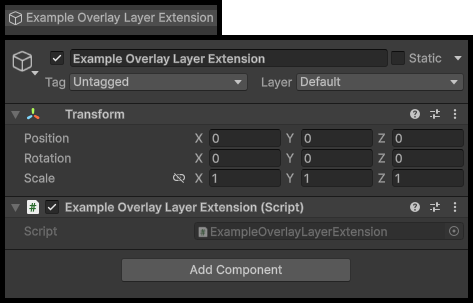
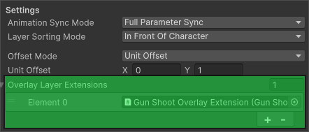

Character Overlay Layer Extensions
Overlay Layers can be extended to add additonal functionality to them.
In the Character Overlay Layer asset is an Overlay Layer Extensions list.
Each entry in the list is a Prefab which must contain a script that inherits from OverlayLayerExtension
The Overlay Layer Extension Class
Overlay Layer Extensions allow you to attach custom login to a Character Overlay Layer.
An Overlay Layer Extension is a Prefab containg a script that inherits from OverlayLayerExtension.
When an Overlay Layer is used, the extension is instantiated and given access to important components such as the Sprite Renderer, Animator, and GameObject used by the Overlay Layer.
This allows Overlay Layers to provide their own gameplay logic or interactions.
How Overlay Layer Extensions Work
Each Character Overlay Layer asset contains a list of Overlay Layer Extensions.
Every entry in the list is a Prefab that:
- Contains a script that inherits from the OverlayLayerExtension class
- Implements the logic for the extension
- Is automatically instantiated when the Overlay Layer is created at runtime.
When the Overlay Layer Extension is initialized, it recieves an OverlayLayerContext object.
This object provides references to the key components used by the Overlay Layer.
These components are:
- GameObject of the Overlay Layer
- Sprite Renderer Component
- Animator Component
OverlayLayerContext Class
OverlayLayerContext is passed to every extension when it's initialized.
It contains references to the core objects used by the Overlay Layer.
public sealed class OverlayLayerContext
{
public SpriteRenderer SpriteRenderer { get; }
public Animator Animator { get; }
public GameObject GameObject { get; }
public OverlayLayerContext(GameObject gameObject, SpriteRenderer spriteRenderer, Animator animator)
{
GameObject = gameObject;
SpriteRenderer = spriteRenderer;
Animator = animator;
}
}
Available References
| Property | Description |
|---|---|
| GameObject | The GameObject created for the overlay layer |
| SpriteRenderer | The SpriteRenderer component rendering Overlay Layer sprites |
| Animator | The Animator component controlling the Overlay layer animations |
These references allow Overlay Layer Extensions to full intereact with the Overlay Layer.
Examples:
- Trigger animations
- Change sprites or materials
- Enable or disable the layer
- Add additional components
Setup Guide
Create the Extension Script
Create a new script that inherits from OverlayLayerExtension.
Example:
using BlazerTech.CharacterManagement.Core;
using UnityEngine;
public class ExampleOverlayLayerExtension : OverlayLayerExtension
{
public override void Initialize(OverlayLayerContext context)
{
base.Initialize(context);
Debug.Log("Initialized!");
}
}
The OverlayLayerContext class gives you access to the Overlay Layer components.
Create the Extension Prefab
Now we need to create a new GameObject prefab that contains our new Extension script.
- Create a new GameObject in your scene and name it.
- Attach your Overlay Layer Extension script.
- Configure any variable on your component.
- Drag the GameObject into your Project window to create a Prefab.

This prefab will be instnatied when the Overlay Layer is created during runtime.
Add the Extension Prefab to the Overlay Layer
Lets attach the Overlay Layer Extension prefab we just created to the Character Overlay Layer asset.
- Select your Character Overlay Layer asset.
- Locate the Overlay Layer Extensions list.
- Add a new element to the list.
- Assign your Extension Prefab.

When the Overlay Layer is used during runtime, all Overlay Layer Extensions will be instantiated in the order listed as children of the Overlay Layer and initialized.
Overlay Layer Extension Example
The follow example is used in the Modern Interiors Integration package.
It simulates a character firing a weapon.
The Overlay Layer only contains the characters hands, allowing the shooting animation to play independently from the main character body.
When the E key is pressed, the extension triggers a Shoot animation on the Overlay Layer.
using BlazerTech.CharacterManagement.Core;
using UnityEngine.InputSystem;
public class GunShootOLE : OverlayLayerExtension
{
private void Update()
{
if (overlayLayerContext == null) return;
if (Keyboard.current.eKey.wasPressedThisFrame)
{
overlayLayerContext.Animator.SetTrigger("Shoot");
}
}
}
In this example:
- The extension checks input every frame.
- When E is pressed, it actives a trigger titled
Shoot. - Only the Overlay Layer animates, letting the rest of the body animate separately.